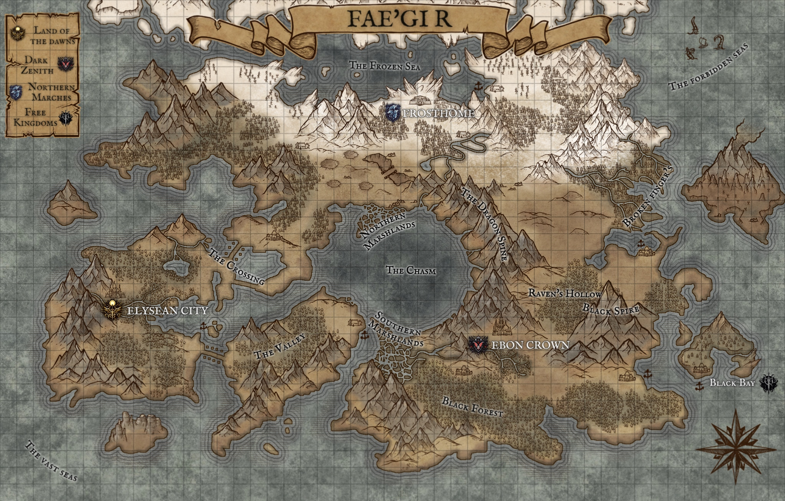
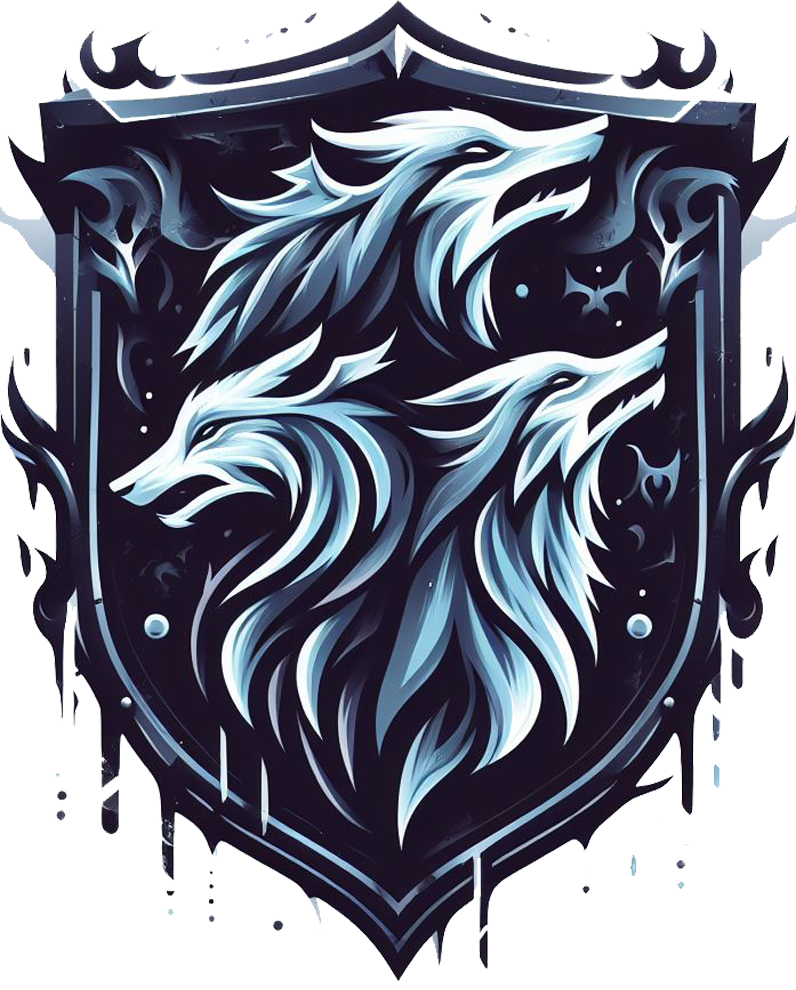

| Acerca del Mundo |
|---|
|
En lo más profundo de las sombras, donde la luz se desvanece y los susurros de la oscuridad danzan en el aire, se encuentra un mundo en el que la fantasía se entrelaza con la más retorcida realidad. Un reino forjado en la fragua de la desesperación y la codicia, donde las líneas entre el bien y el mal son tan borrosas como la niebla que envuelve sus terrenos inhóspitos. En este escenario sombrío, las ciudades se alzan como monumentos a la decadencia, sus torres góticas se elevan como espinas afiladas hacia un cielo perpetuamente nublado. Los callejones estrechos susurran secretos oscuros, mientras los habitantes, marcados por cicatrices físicas y emocionales, luchan por sobrevivir en un mundo donde la traición es tan común como la lluvia que cae sin piedad. En las vastas extensiones salvajes, donde los bosques antiguos ocultan secretos milenarios y las montañas retumban con la furia de seres olvidados, se gesta un conflicto que se alimenta de las almas perdidas y las ambiciones desgarradoras. Los héroes y anti-héroes, envueltos en un manto de moralidad desvanecida, caminan por sendas sombrías en busca de poder, venganza o redención, mientras la magia oscura fluye como una corriente siniestra, tejiendo su influencia en cada rincón del paisaje desgarrado. 

|
| Mapa |
|---|
|  |
| Facciones |
|---|
Reinos
Tierra de los amaneceres
Cénit SombríoMarcas del Norte
Reinos Libres |